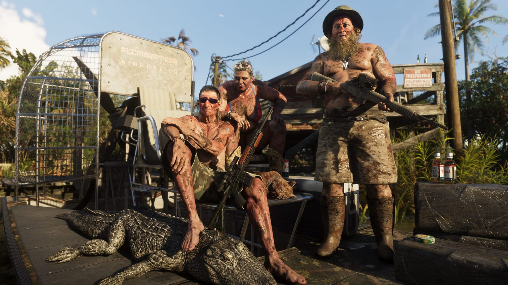
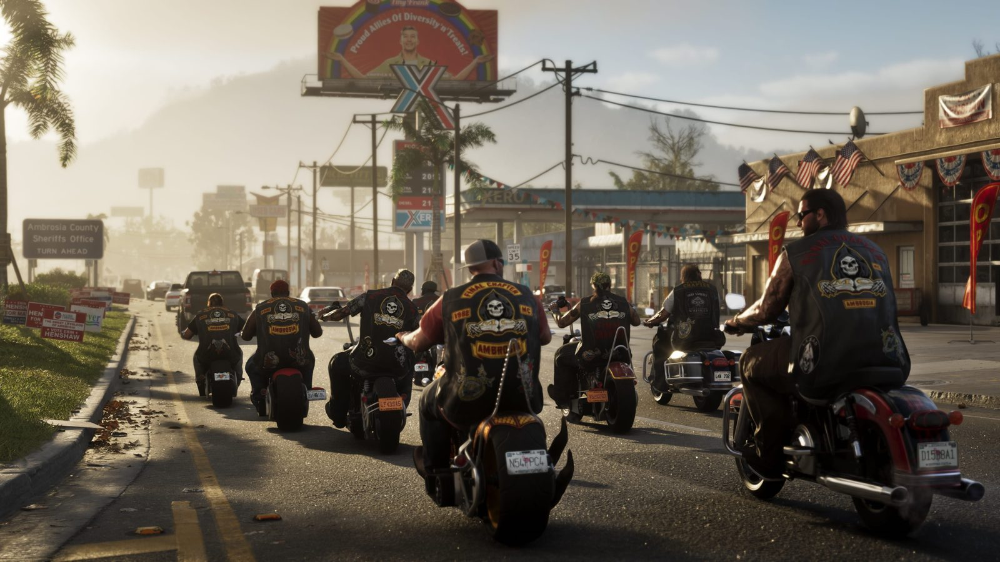

Confirmed
Vice City
The main urban hub and the first area to prioritise for district guides, landmarks and activity pages.
View on map →Leonida directory
A clean location directory for confirmed regions, future route notes, screenshots and update-ready guide pages.
Known regions
The main urban hub and the first area to prioritise for district guides, landmarks and activity pages.
View on map →
Island and coastal route watchlist. Good for scenic travel, bridge routes and future water activity notes.
View on map →
Wetlands region ready for exploration notes, wildlife-style observations and rural route planning.
View on map →
Coastal area watchlist for activity pages, screenshots, landmarks and future route write-ups.
View on map →
Inland industrial-style area. Keep this ready for points of interest, collectibles and travel notes.
View on map →
Northern outdoor region watchlist for terrain, viewpoints, hidden places and later walkthrough content.
View on map →How to use this page
Each area can later become its own page with missions, screenshots, collectibles, shops, routes and transport notes.
Editorial note
Keep confirmed area names separate from theories. Add new details only when official material confirms them.